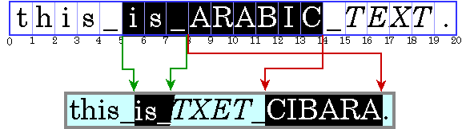
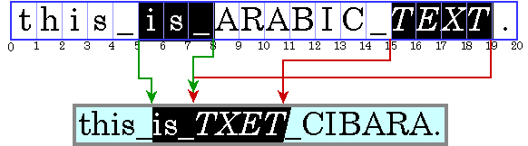

Lesson: Working with Text APIs
Section: Advanced Text Display
Working with Bidirectional Text
This section discusses how to work with bidirectional text with classes in the
java.awt and
java.awt.font packages. These classes let you draw styled text in any language or script supported by The Unicode Standard: a global character coding system for handling diverse modern, classical, and historical languages. When drawing text, the direction the text is read must be taken into account so that all words in the string display correctly. These classes maintain the direction of the text and correctly draws it no matter if the string runs left-to-right, right-to-left, or both (bidirectional). Bidirectional text presents interesting problems for correctly positioning carets, accurately locating selections, and correctly displaying multiple lines. Also bidirectional and right-to-left text present similar problems for moving the caret in the correct direction in response to right and left arrow key presses.
The following topics are covered:
- Ordering Text
- Manipulating Bidirectional Text
- Performing Text Layout in a Java Application
- Managing Text Layout with the TextLayout Class
If you plan to work with Swing components see Working with Bidirectional Text with the JTextComponent Class and Using Text Components for more information.
Ordering Text
Java SE stores text in memory in logical order, which is the order in which characters and words are read and written. The logical order is not necessarily the same as the visual order, which is the order in which the corresponding glyphs are displayed.
A writing system' visual order must be maintained in bidirectional text even when languages are mixed together. This is illustrated in the following figure, which displays an Arabic phrase embedded in an English sentence.
Note: In this and subsequent examples, Arabic and Hebrew text is represented by upper case letters and spaces are represented by underscores. Each illustration contains two parts: a representation of the characters stored in memory (the characters in logical order) followed by a representation of how those characters are displayed (the characters in visual order). The numbers below the character boxes indicate the insertion offsets.

Even though they are part of an English sentence, the Arabic words are displayed in the Arabic script order, right-to-left. Because the italicized Arabic word is logically after the Arabic in plain text, it is visually to the left of the plain text.
When a line with a mixture of left-to-right and right-to-left text is displayed, the base direction is significant. The base direction is the script order of the predominant writing system. For example, if the text is primarily English with some embedded Arabic, then the base direction is left-to-right. If the text is primarily Arabic with some embedded English or numbers, then the base direction is right-to-left.
The base direction determines the order in which segments of text with a common direction are displayed. In the example shown in the previous figure, the base direction is left-to-right. There are three directional runs in this example: the English text at the beginning of the sentence runs left to right, the Arabic text runs right to left, and the period runs left to right.
Graphics are often embedded in the flow of text. These inline graphics behave like glyphs in terms of how they affect the text flow and line wrapping. Such inline graphics need to be positioned using the same bidirectional layout algorithm so that they appear in the proper location in the flow of characters.
Java SE uses the Unicode Bidirectional Algorithm, which is an algorithm that is used to order glyphs within a line, thereby determining the directionality of bidirectional texts. In most cases, you do not need to include any additional information in order for this algorithm to obtain the correct display ordering.
Manipulating Bidirectional Text
To allow the user to edit bidirectional text, you must be able to do the following:
Displaying Carets
In editable text, a caret is used to graphically represent the current insertion point, the position in the text where new characters will be inserted. Typically, a caret is shown as a blinking vertical bar between two glyphs. New characters are inserted and displayed at the caret's location.
Calculating the caret position can be complicated, particularly for bidirectional text. Insertion offsets on directional boundaries have two possible caret positions because the two glyphs that correspond to the character offset are not displayed adjacent to one another. This is illustrated in the following figure. In this figure, the carets are shown as square brackets to indicate the glyph to which the caret corresponds.

Character offset 8 corresponds to the location after the underscore and before the A. If the user enters an Arabic character, its glyph is displayed to the right of (before) the A; if the user enters an English character, its glyph is displayed to the right of (after) the underscore.
To handle this situation, some systems display dual carets, a strong (primary) caret and a weak (secondary) caret. The strong caret indicates where an inserted character will be displayed when that character's direction is the same as the base direction of the text. The weak caret shows where an inserted character will be displayed when the character's
direction is the opposite of the base direction
TextLayout automatically supports dual carets.
When you're working with bidirectional text, you can't simply add the widths of the glyphs before a character offset to calculate the caret position. If you did, the caret would be drawn in the wrong place, as shown in the following figure:
For the caret to be properly positioned, the widths of the glyphs to the left of the offset need to be added and the current context taken into account. Unless the context is taken into account, the glyph metrics will not necessarily match the display. (The context can affect which glyphs are used.)
Moving Carets
All text editors allow the user to move the caret with the arrow keys. Users expect the caret to move in the direction of the pressed arrow key. In left-to-right text, moving the insertion offset is simple: the right arrow key increases the insertion offset by one and the left arrow key decreases it by one. In bidirectional text or in text with ligatures, this behavior would cause the caret to jump across glyphs at direction boundaries and move in the reverse direction within different directional runs.
To move the caret smoothly through bidirectional text, you need to take into account the direction of the text runs. You can't simply increment the insertion offset when the right arrow key is pressed and decrement it when the left arrow key is pressed. If the current insertion offset is within a run of right-to-left characters, the right arrow key should decrease the insertion offset, and the left arrow key should increase it.
Moving the caret across a directional boundary is even more complicated. The following figure illustrates what happens when a directional boundary is crossed when the user is navigating with the arrow key. Stepping three positions to the right in the displayed text corresponds to moving to the character offsets 7, 19, then 18.

Certain glyphs should never have a caret between them; instead, the caret should move as though the glyphs represented a single character. For example, there should never be a caret between an o and an umlaut if they are represented by two separate characters.
The
TextLayout class provides methods (
getNextRightHit and
getNextLeftHit) that enable you to easily move the caret smoothly through bidirectional text.
Hit Testing
Often, a location in device space must be converted to a text offset. For example, when a user clicks the mouse on selectable text, the location of the mouse is converted to a text offset and used as one end of the selection range. Logically, this is the inverse of positioning a caret.
When you're working with bidirectional text, a single visual location in the display can correspond to two different offsets in the source text, as shown in the following figure:

Because a single visual location can correspond to two different offsets, hit testing bidirectional text isn't just a matter of measuring glyph widths until the glyph at the correct location is found and then mapping that position back to a character offset. Detecting the side that the hit was on helps distinguish between the two alternatives.
You can perform hit testing using
TextLayout.hitTestChar. Hit information is encapsulated in a
TextHitInfo object and includes information about the side that the hit was on.
Highlighting Selections
A selected range of characters is represented graphically by a highlight region, an area in which glyphs are displayed with inverse video or against a different background color.
Highlight regions, like carets, are more complicated for bidirectional text than for unidirectional text. In bidirectional text, a contiguous range of characters might not have a contiguous highlight region when displayed. Conversely, a highlight region showing a visually contiguous range of glyphs might not correspond to a single, contiguous range of characters.
This results in two strategies for highlighting selections in bidirectional text:
Logical highlighting: With logical highlighting, the selected characters are always contiguous in the text model, and the highlight region is allowed to be discontiguous. The following is an example of logical highlighting:
 Visual highlighting: With visual highlighting, there might be more than one range of selected characters, but the highlight region is always contiguous. The following is an example of visual highlighting:

Logical highlighting is simpler to implement, since the selected characters are always contiguous in the text.
The sample
SelectionSample.java
Performing Text Layout in a Java Application
Depending on which Java APIs you use, you can have as little or as much control over text layout as you need:
If you just want to display a block of text or need an editable text control, you can use
JTextComponent, which will perform the text layout for you.JTextComponentis designed to handle the needs of most international applications and supports bidirectional text For more information aboutJTextComponent, see Working with Bidirectional Text with the JTextComponent Class and Using Text Components for more information.If you want to display a simple text string, you can call the method
Graphics2D.drawStringand let Java 2D lay out the string for you. You can also useGraphics2D.drawStringto render styled strings and strings that contain bidirectional text. For more information about rendering text throughGraphics2D, see Working with Text APIs.If you want to implement your own text editing routines, you can use
TextLayoutto manage text layout, highlighting, and hit detection. The facilities provided byTextLayouthandle most common cases, including text strings with mixed fonts, mixed languages, and bidirectional text. For more information about using TextLayout, see Managing Text Layout.If you want total control over how text is shaped and positioned, you can construct your own
GlyphVectorinstances using theFontclass and then render them through theGraphics2Dclass.
Generally, you do not need to perform text layout operations yourself. For most applications,
JTextComponent is the best solution for displaying static and editable text. However,
JTextComponent does not support the display of dual carets or discontiguous selections in bidirectional text. If your application requires these features, or you prefer to implement your own text editing routines, you can use the Java 2D text layout APIs.
Managing Text Layout with the TextLayout Class
The
TextLayout class supports text that contains multiple styles and characters from different writing systems, including Arabic and Hebrew. (Arabic and Hebrew are particularly difficult to display because you must reshape and reorder the text to achieve an acceptable representation.)
TextLayout simplifies the process of displaying and measuring text even if you are working with English-only text. By using
TextLayout, you can achieve high-quality typography with no extra effort.
TextLayout is designed so that there is no significant performance impact when it is used to display simple, unidirectional text. There is some additional processing overhead when
TextLayout is used to display Arabic or Hebrew text. However, it's typically on the order of microseconds per character and is dominated by the execution of normal drawing code.
The
TextLayout class manages the positioning and ordering of glyphs for you. You can use
TextLayout to do the following:
- Laying Out Text with the TextLayout Class
- Displaying Dual Carets with the TextLayout Class
- Moving the Caret with the TextLayout Class
- Hit Testing with the TextLayout Class
- Highlighting Selections with the TextLayout Class
Laying Out Text with the TextLayout Class
TextLayout automatically lays out text, including bidirectional text, with the correct shaping and ordering. To correctly shape and order the glyphs representing a line of text,
TextLayout must know the full context of the text:
- If the text fits on a single line, such as a single-word label for a button or a line in a dialog box, you can construct a
TextLayoutdirectly from the text. - If you have more text than can fit on a single line or want to break text on a single line into tabbed segments, you cannot construct a
TextLayoutdirectly. You must use aLineBreakMeasurerto provide sufficient context. See Drawing Multiple Lines of Text for more information.
The base direction of the text is normally set by an attribute (style) on the text. If that attribute is missing,
TextLayout follows the Unicode bidirectional algorithm and derives the base direction from the initial characters in the paragraph.
Displaying Dual Carets with the TextLayout Class
TextLayout maintains caret information such as the caret
Shape, position, and angle. You can use this information to easily display carets in both unidirectional and bidirectional text. When you're drawing carets for bidirectional text, using
TextLayout ensures that the carets will be positioned correctly.
TextLayout provides default caret Shapes and automatically supports dual carets. For italic and oblique glyphs,
TextLayout produces angled carets, as shown in the following figure. These caret positions are also used as the boundaries between glyphs for highlighting and hit testing, which helps produce a consistent user experience.
Given an insertion offset, the
getCaretShapes method returns a two-element array of
Shape objects: element 0 contains the strong caret and element 1 contains the weak
caret, if one exists. To display dual carets, you simply draw both caret
Shape objects; the carets will be automatically be rendered in the correct positions.
If you want to use custom carets, you can retrieve the position and angle of the carets from the
TextLayout and draw them yourself.
The sample
HitTestSample.java
A click on the o on the side of the o towards the Hebrew text records that the end user clicked after the o, which is part of the English text. This positions the weak (black) caret next to the o and the strong caret (red) in front of the H:

A click on the space to the right of the o records that the end user clicked the space, which is part of the Hebrew text. This positions the strong (red) caret next to the o and the weak caret (black) in front of the H:

Moving the Caret with the TextLayout Class
You can also use the
TextLayout class to determine the resulting insertion offset when a user presses the left or right arrow key. Given a TextHitInfo object that represents the current insertion offset, the
getNextRightHit method returns a
TextHitInfo object that represents the correct insertion offset if the right arrow key is pressed. The
getNextLeftHit method provides the same information for the left arrow key.
The following excerpt from the sample
ArrowKeySample.java
public class ArrowKeySample extends JPanel implements KeyListener {
// ...
private static void createAndShowGUI() {
// Create and set up the window.
ArrowKey demo = new ArrowKey();
frame = new JFrame("Arrow Key Sample");
frame.addKeyListener(demo);
// ...
}
private void handleArrowKey(boolean rightArrow) {
TextHitInfo newPosition;
if (rightArrow) {
newPosition = textLayout.getNextRightHit(insertionIndex);
} else {
newPosition = textLayout.getNextLeftHit(insertionIndex);
}
// getNextRightHit() / getNextLeftHit() will return null if
// there is not a caret position to the right (left) of the
// current position.
if (newPosition != null) {
// Update insertionIndex.
insertionIndex = newPosition.getInsertionIndex();
// Repaint the Component so the new caret(s) will be displayed.
frame.repaint();
}
}
// ...
@Override
public void keyPressed(KeyEvent e) {
int keyCode = e.getKeyCode();
if (keyCode == KeyEvent.VK_LEFT || keyCode == KeyEvent.VK_RIGHT) {
handleArrowKey(keyCode == KeyEvent.VK_RIGHT);
}
}
}
Hit Testing with the TextLayout Class
The
TextLayout class provides a simple mechanism for hit testing text. The
hitTextChar method takes x and y coordinates from the mouse as arguments and returns a
TextHitInfo object. The
TextHitInfo contains the insertion offset for the specified position and the side that the hit was on. The insertion offset is the offset closest to the hit: if the hit is past the end of the line, the offset at the end of the line is returned.
The following excerpt from
HitTestSample.java
private class HitTestMouseListener extends MouseAdapter {
public void mouseClicked(MouseEvent e) {
Point2D origin = computeLayoutOrigin();
// Compute the mouse click location relative to
// textLayout's origin.
float clickX = (float) (e.getX() - origin.getX());
float clickY = (float) (e.getY() - origin.getY());
// Get the character position of the mouse click.
TextHitInfo currentHit = textLayout.hitTestChar(clickX, clickY);
insertionIndex = currentHit.getInsertionIndex();
// Repaint the Component so the new caret(s) will be displayed.
repaint();
}
}
Highlighting Selections with the TextLayout Class
You can get a
Shape that represents the highlight region from the
TextLayout.
TextLayout automatically takes the context into account when calculating the dimensions of the highlight region.
TextLayout supports both logical and visual highlighting.
The following excerpt from
SelectionSample.java
public void paint(Graphics g) {
// ...
boolean haveCaret = anchorEnd == activeEnd;
if (!haveCaret) {
// Retrieve highlight region for selection range.
Shape highlight =
textLayout.getLogicalHighlightShape(anchorEnd, activeEnd);
// Fill the highlight region with the highlight color.
graphics2D.setColor(HIGHLIGHT_COLOR);
graphics2D.fill(highlight);
}
// ...
}
// ...
private class SelectionMouseMotionListener extends MouseMotionAdapter {
public void mouseDragged(MouseEvent e) {
Point2D origin = computeLayoutOrigin();
// Compute the mouse location relative to
// textLayout's origin.
float clickX = (float) (e.getX() - origin.getX());
float clickY = (float) (e.getY() - origin.getY());
// Get the character position of the mouse location.
TextHitInfo position = textLayout.hitTestChar(clickX, clickY);
int newActiveEnd = position.getInsertionIndex();
// If newActiveEnd is different from activeEnd, update activeEnd
// and repaint the Panel so the new selection will be displayed.
if (activeEnd != newActiveEnd) {
activeEnd = newActiveEnd;
frame.repaint();
}
}
}
private class SelectionMouseListener extends MouseAdapter {
public void mousePressed(MouseEvent e) {
Point2D origin = computeLayoutOrigin();
// Compute the mouse location relative to
// TextLayout's origin.
float clickX = (float) (e.getX() - origin.getX());
float clickY = (float) (e.getY() - origin.getY());
// Set the anchor and active ends of the selection
// to the character position of the mouse location.
TextHitInfo position = textLayout.hitTestChar(clickX, clickY);
anchorEnd = position.getInsertionIndex();
activeEnd = anchorEnd;
// Repaint the Panel so the new selection will be displayed.
frame.repaint();
}
}
The method SelectionMouseListener.mousePressed specifies the variable anchorEnd, which is the position in the text where the mouse was clicked. The method SelectionMouseMotionListener.mouseDragged specifies the variable activeEnd, which is the position in the text to where the mouse was dragged. The paint method retrieves a
Shape object that represents the selected text (the text between the positions anchorEnd and activeEnd). The paint method then fills the
Shape object with the highlight color.